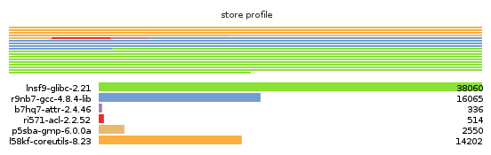

Next: Invoking guix graph, Previous: Invoking guix lint, Up: Utilities [Contents][Index]
guix sizeThe guix size command helps package developers profile the
disk usage of packages. It is easy to overlook the impact of an
additional dependency added to a package, or the impact of using a
single output for a package that could easily be split (see Packages with Multiple Outputs). Such are the typical issues that
guix size can highlight.
The command can be passed one or more package specifications
such as gcc@4.8
or guile:debug, or a file name in the store. Consider this
example:
$ guix size coreutils store item total self /gnu/store/…-gcc-5.5.0-lib 60.4 30.1 38.1% /gnu/store/…-glibc-2.27 30.3 28.8 36.6% /gnu/store/…-coreutils-8.28 78.9 15.0 19.0% /gnu/store/…-gmp-6.1.2 63.1 2.7 3.4% /gnu/store/…-bash-static-4.4.12 1.5 1.5 1.9% /gnu/store/…-acl-2.2.52 61.1 0.4 0.5% /gnu/store/…-attr-2.4.47 60.6 0.2 0.3% /gnu/store/…-libcap-2.25 60.5 0.2 0.2% total: 78.9 MiB
The store items listed here constitute the transitive closure of Coreutils—i.e., Coreutils and all its dependencies, recursively—as would be returned by:
$ guix gc -R /gnu/store/…-coreutils-8.23
Here the output shows three columns next to store items. The first column, labeled “total”, shows the size in mebibytes (MiB) of the closure of the store item—that is, its own size plus the size of all its dependencies. The next column, labeled “self”, shows the size of the item itself. The last column shows the ratio of the size of the item itself to the space occupied by all the items listed here.
In this example, we see that the closure of Coreutils weighs in at 79 MiB, most of which is taken by libc and GCC’s run-time support libraries. (That libc and GCC’s libraries represent a large fraction of the closure is not a problem per se because they are always available on the system anyway.)
Since the command also accepts store file names, assessing the size of a build result is straightforward:
guix size $(guix system build config.scm)
When the package(s) passed to guix size are available in the
store24, guix size queries the daemon to determine its
dependencies, and measures its size in the store, similar to du
-ms --apparent-size (see du invocation in GNU
Coreutils).
When the given packages are not in the store, guix size
reports information based on the available substitutes
(see Substitutes). This makes it possible it to profile disk usage of
store items that are not even on disk, only available remotely.
You can also specify several package names:
$ guix size coreutils grep sed bash store item total self /gnu/store/…-coreutils-8.24 77.8 13.8 13.4% /gnu/store/…-grep-2.22 73.1 0.8 0.8% /gnu/store/…-bash-4.3.42 72.3 4.7 4.6% /gnu/store/…-readline-6.3 67.6 1.2 1.2% … total: 102.3 MiB
In this example we see that the combination of the four packages takes 102.3 MiB in total, which is much less than the sum of each closure since they have a lot of dependencies in common.
When looking at the profile returned by guix size, you may
find yourself wondering why a given package shows up in the profile at
all. To understand it, you can use guix graph --path -t
references to display the shortest path between the two packages
(see Invoking guix graph).
The available options are:
Use substitute information from urls.
See the same option for guix build.
Sort lines according to key, one of the following options:
selfthe size of each item (the default);
closurethe total size of the item’s closure.
Write a graphical map of disk usage in PNG format to file.
For the example above, the map looks like this:
This option requires that
Guile-Charting be
installed and visible in Guile’s module search path. When that is not
the case, guix size fails as it tries to load it.
Consider packages for system—e.g., x86_64-linux.
Add directory to the front of the package module search path (see Package Modules).
This allows users to define their own packages and make them visible to the command-line tools.
More precisely, guix size looks for the
ungrafted variant of the given package(s), as returned by
guix build package --no-grafts. See Security Updates,
for information on grafts.
Next: Invoking guix graph, Previous: Invoking guix lint, Up: Utilities [Contents][Index]